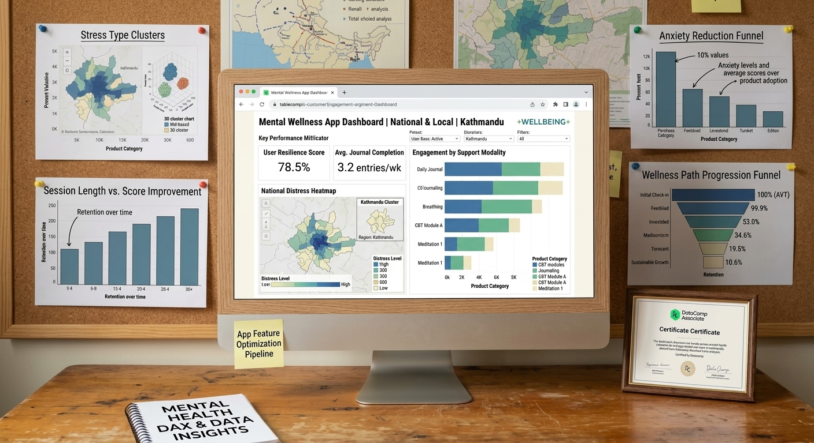

Machine Learning & Web API
Mental Health Signal | Student Wellness Analytics
Built an end-to-end predictive web application analyzing student daily rhythms, screen time, and stress factors. Trained a supervised Machine Learning regression model[cite: 2] and deployed a high-performance FastAPI backend connected to an interactive gauge UI[cite: 1, 2].
Python (Scikit-Learn)
FastAPI
JavaScript (ES6)